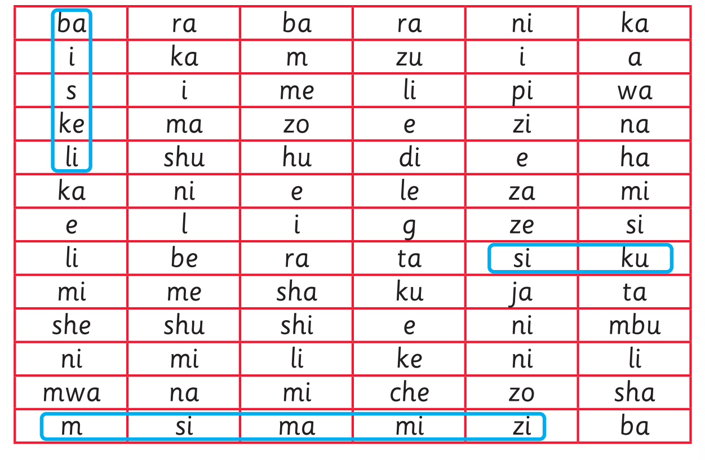

Tafuta maneno kumi katika chati, kisha uyaandike kwa mwandiko wa kuunga; chunguza chati ya mstari ulioinuliwa kabla ya kujibu; tumia eneo la kuandikia, kibodi au Breli.

2. Tafuta maneno kumi ya Kiswahili kutoka katika chati hii, kisha yaandike kwa mwandiko wa kuunga. ba ra ba ra ni ka i ka m zu i a s i me li pi wa ke ma zo e zi na li shu hu di e ha ka ni e le za mi e l i g ze si li be ra ta si ku mi me sha ku ja ta she shu shi e ni mbu ni mi li ke ni li mwa na mi che zo sha m si ma mi zi ba Mifano: Shughuli ya sita Tazama picha zifuatazo, kisha andika jina la kila picha kwa mwandiko wa kuunga.
Tafuta maneno kumi katika chati, kisha uyaandike kwa mwandiko wa kuunga; chunguza chati ya mstari ulioinuliwa kabla ya kujibu; tumia eneo la kuandikia, kibodi au Breli.

Tambua picha kwa kuitazama, kuchunguza kitu halisi au mchoro mguso, kisha andika jina lake; tumia eneo la kuandikia, kibodi au Breli.

Tambua picha kwa kuitazama, kuchunguza kitu halisi au mchoro mguso, kisha andika jina lake; tumia eneo la kuandikia, kibodi au Breli.